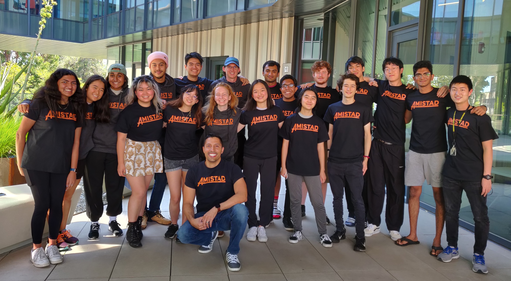

Mirror Descent: A Geometric Perspective

Date: Jan 15, 2024
Mirror descent is a powerful optimization algorithm that generalizes gradient descent by using a different geometry. In this post, I'll explore the geometric intuition behind mirror descent and how it relates to the Bregman divergence.